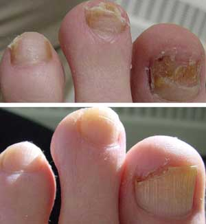
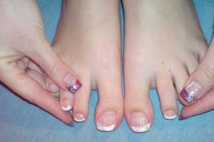

Erste-Hilfe-Set für zu Hause
Gesundheit und Schönheit – Volksmittel
VERSTECKTE BEDROHUNG: ERFAHRE DIE FURCHTBARE WAHRHEIT ÜBER PILZ, BEVOR DU DEINE NÄGEL VERLIERST!
Hallo zusammen, ich heiße Susanne und komme aus Düsseldorf.
Vor drei Jahren wurde mein Mann Opfer einer scheinbar harmlosen Erkrankung, bekannt als Nagelpilz!
Viele Menschen sind von einer weniger starken Form von Nagelpilz befallen und wissen gar nichts davon!
Sie sind sich auch nicht der möglichen Folgen bewusst. Und aufgrund unserer Erfahrung können wir sagen, dass diese Folgen BEÄNGSTIGEND sind.
Alles fing so harmlos an, dass wir es gar nicht beachteten!
Eine Pilzinfektion kann jederzeit auftreten. Stress, eine gewöhnliche Erkältung, ein geschwächtes Immunsystem. Im Fall meines Mannes war es genau so. Er hatte eine Erkältung und eine Woche später bemerkten wir die ersten SYMPTOME:
- Seine Füße waren angeschwollen, besonders, wenn er sie in Wasser tauchte
- Seine Haut wurde schuppig
- Seine Füße fingen an zu stinken
- Sein Fußnagel wurde gelb und sein Finger fing an wehzutun.
Die Füße meines Mannes nach der "Behandlung" mit Salben aus der Apotheke
WENN EUCH JE SO EIN SYMPTOM AUFFÄLLT, SUCHT NICHT NACH AUSREDEN – IN 95 % DER FÄLLE BEDEUTET DAS, DASS DU EINE PILZINFEKTION HAST UND UMGEHEND HANDELN SOLLTEST!
Mein Mann handelte nicht sofort – aber ich dachte bereits über mögliche Folgen nach und habe auf seine Fußnägel eine Salizylsalbe aufgetragen.
"Unsere Großmütter haben sie benutzt, deshalb hilft sie ja vielleicht!"
Diese "vielleicht" Behandlung half in diesem Fall nicht und er musste schließlich nach einiger Zeit zum Arzt gehen. Der Arzt entfernte seine Nagelplatte komplett.
Meint ihr, es hat geholfen?
Ein Jahr später wuchs sein Nagel komplett nach, aber die Pilzinfektion wurde nur noch schlimmer !
Seine Nägel sahen wie eine widerliche Masse aus. Ich musste fast brechen, als ich das sah und er fühlte sich deswegen noch schlechter. Seine Füße stanken furchtbar. DIE ÄRTZE HABEN ÜBERHAUPT NICHT GEHOLFEN – das Einzige, was sie vorschlugen, war, den Nagel wieder zu entfernen.
Was macht das für einen Unterschied, wenn der Pilz immer wieder zurückkommt?
Ich werde es euch direkt sagen.
DIE APOTHEKEN VERKAUFEN KEINE PRODUKTE, DIE WIRKSAM PILZERKRANKUNGEN BEHANDELN.
Diese Produkte verschleiern lediglich Symptome oder "unterdrücken sie nur vorübergehend ", aber nach einiger Zeit kommt die Infektion zurück. Ich werde euch die Wahrheit über all diese Produkte aufzeigen, die die Ärzte meinem Mann verschrieben haben. Wir haben für diese Produkte ein Vermögen ausgegeben, aber ES WAR ALLES NICHTS WERT
Option A – systemische Arzneimittel
Diese Medikamente "zerstören" den Pilz, aber niemand wird euch sagen, wie schnell sie auch eure Leber zerstören!
Ihr könnt tatsächlich diese Medikamente mit einem Rattengift vergleichen, das euren Körper vergiftet – es wird schlicht und einfach in kleineren Dosen verwendet.

Option B – Tropfen und Lacke
Ich dachte, das wäre die einzig mögliche Behandlung für meinen Mann, aber er bekam davon EINE SCHLIMME ALLERGISCHE REAKTION. Wie sich herausstellte, ist das nichts Ungewöhnliches, da sich der Körper eine toxische Vergiftung zuzieht , sobald eine Person ein Antipilz-Produkt auf ihre Füße aufträgt. Einige Menschen reagieren sensibler, während es bei anderen länger dauern kann.
Ich habe im Internet Artikel gelesen und mit Leuten gesprochen, die eine Pilzinfektion haben. Die meisten von ihnen haben dieselbe Reaktion wie mein Mann, TROTZDEM WERDEN DIESE ARZNEIMITTEL WEITERHIN VERKAUFT!!!
Während wir diese Produkte benutzten, musste er auch Antihistaminika nehmen – nach Empfehlung des Arztes, und das alles führte aufgrund einer Vergiftung zu einem Krankenhausaufenthalt! Gott sei Dank ging alles gut, aber sie halfen uns nicht bei unserem Kampf gegen den Pilz. Sie schlugen vor, dass wir wieder Volksmittel probieren!
Volksmittel! Für jemanden, der einen Nagel hat, der so aussieht! Und das soll Gesundheitsversorgung im 21. JAHRHUNDERT sein
Mein Mann konnte die Schmerzen nicht länger ertragen, weshalb er die Nagelplatte selbst herausriss.
Unsere Geschichte ist keine einmalige. Mir sind im Krankenhaus viele Menschen mit einer Pilzinfektion sowohl an den Händen als auch an den Beinen aufgefallen! Außerdem waren diese Menschen sowohl Männer als auch Frauen, jung und alt.
WIE ERHOLT MAN SICH VON EINER PILZINFEKTION?
Seit Anfang verstand ich, dass außer mir niemand sonst meinem Mann helfen wird. Ich habe viele Informationen über Pilzinfektionen gelesen und zu einem Zeitpunkt hielt ich online Ausschau nach Informationen über alle Stadien von Pilzinfektionen und darüber, wie man sie in der ZIVILISIERTEN Welt behandeln kann.
Es stellt sich heraus, dass die westlichen Länder das EINZIG SICHERE verfügbare Antipilz-Produkt benutzen – es heißt . Es gilt als effektivstes Antipilz-Produkt, das auf dem Markt erhältlich ist. Keiner importiert es nach Deutschland (natürlich hat die deutsche Pharmamafia alle Apotheken mit ihren unwirksamen und schädlichen Produkten übernommen).
Ich habe alle Forschungen, Fallstudien und Umfragen ausführlich studiert und kam zu dem Schluss, dass dieses Produkt mehrere Wirkungen hat:
- Es entfernt alle bekannten und schädlichen Pilzarten.
- Es lindert Juckreiz, Schmerzen und Hautreizung.
- Es desinfiziert mit einer Effizienz von 100 %.
- Es grenzt die Bereiche der Entzündung ein (es verhindert die Ausbreitung der Infektion).
- Es stellt durch die Infektion beschädigte Zellen wieder her.
- Es beseitigt den durch die Infektion verursachten Geruch.
- Die Haut erhält notwendige Nährstoffe – was die Bekämpfung der Infektion vereinfacht

IHR KÖNNT HIER MEHR ÜBER ERFAHREN >>> Offizielle Webseite
Die Inhaltsstoffe des Antipilz-Produkts GARANTIEREN eine absolute Sicherheit. Das Produkt hat keine Nebenwirkungen! Es enthält lediglich natürliche Inhaltsstoffe, die sich gegenseitig verstärken. Diese kombinierte Wirkung ermöglicht es euch, eine komplette Wiederherstellung zu erreichen.
Deshalb kann es in jedem Stadium der Infektion benutzt werden.
Nagelpilz – nur einer der Gründe, zu benutzen. Es ist für die Therapie der meisten bekannten Pilzinfektionen geeignet, wie der Flechte.
Gott sei Dank, habe ich den offiziellen Anbieter für Deutschland gefunden. Ich habe das Produkt sofort bestellt und in vier Tagen hatten wir das Päckchen zu Hause.
Wir fingen mit der aktiven Therapie der Pilzinfektion meines Mannes im fortgeschrittenen Stadium an. – UNSERE ECHTE RETTUNG! Ich habe keine Ahnung, wie lange er sich damit ABGEQUÄLT hätte, wenn ich dieses Produkt nicht gefunden hätte. Meinem Mann ging es in ein paar Wochen besser und innerhalb eines Monats war die fortgeschrittene Pilzinfektion komplett weg. Zum ersten Mal nach einer langen Zeit (2,5 Jahre).
Uns ist aufgefallen, dass ihm jetzt glatte, saubere und gesunde Nägel wachsen!
MEINE EMPFEHLUNG IST FÜR JEDEN, DER JE DURCH SO EINE HÖLLE GEGANGEN IST.
VERSCHWENDET KEINE ZEIT MIT NUTZLOSEN BEHANDLUNGEN! Und wartet nicht, bis die Infektion sich in ein fortgeschrittenes Stadium entwickelt – wodurch eine Nagelentfernung die einzig übrige Lösung ist.
Ich stelle zur Vorbeugungden Kontakt des Anbieters zur Verfügung (vertraut mir: Ihr seid besser dran, wenn ihr dieses Problem erst gar nicht habt). Dieser Anbieter lieferte mir das Produkt, das uns umgehend geholfen hat – dies sind Webseiten des offiziellen Anbieters:
Alle Zertifikate sind online verfügbar – ich habe das überprüft. Es gibt nichts mehr, was ich noch sagen brauche, denn das Produkt ist zu 100 % wirksam und sicher und seine Ergebnisse sprechen für sich!
Passt auf euch und eure Gesundheit auf.
Ich hoffe, ich habe euch geholfen!

